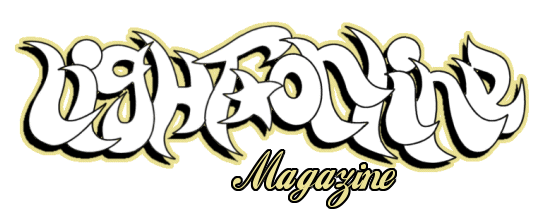
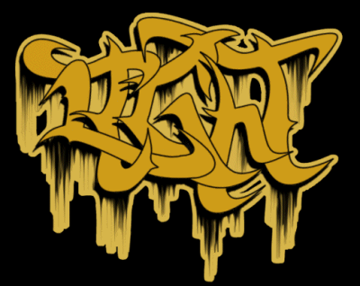
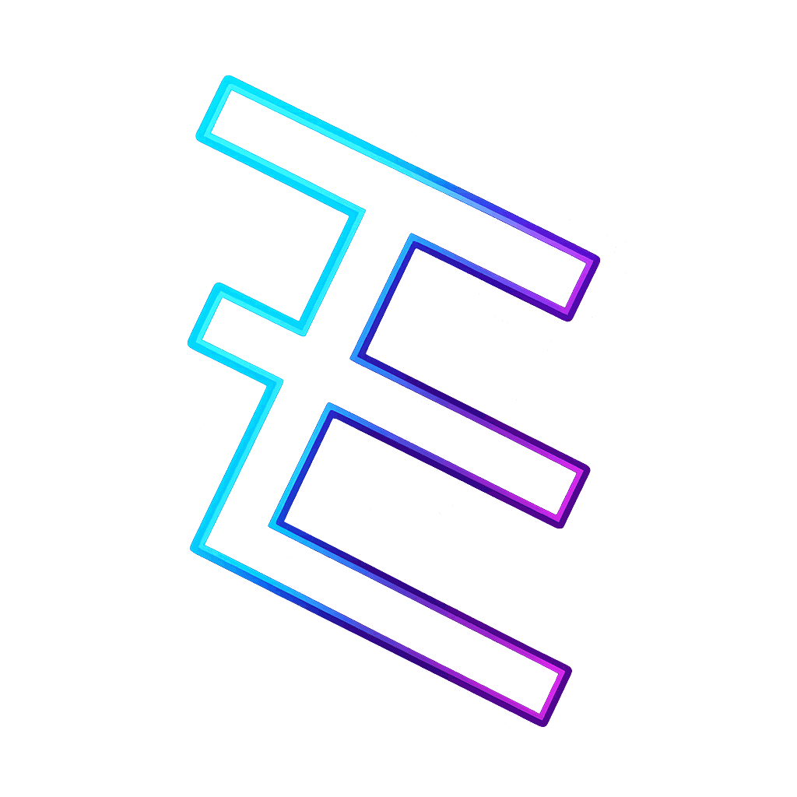
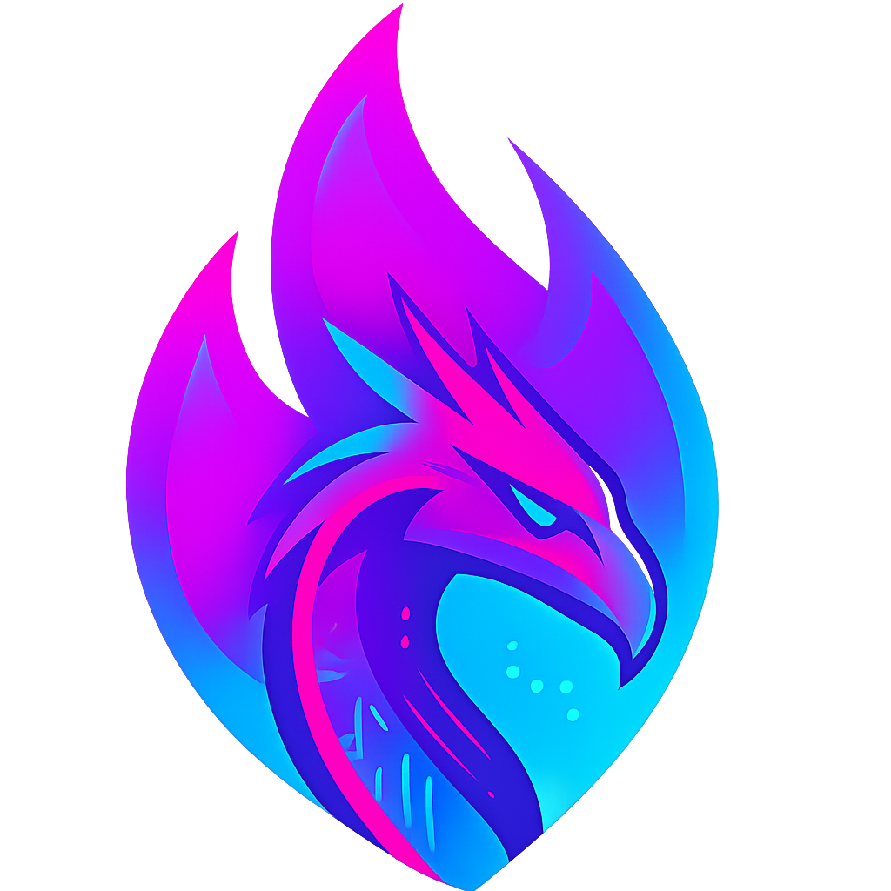

Origins
Early web instincts still shape how I lead security.
My path into security started with a hand-me-down Apple IIe, late-night IRC, and the early web. I taught myself HTML, CSS, and JavaScript by tweaking profiles on Arcadium.
By high school, I was hand-coding websites for the dot-com startup Iprose Internet / Unique Focus, building early web presences for local businesses, and running LightOnline, a music e-zine. In college, I moved deeper into design work, creating advertisements, magazine layouts, and album art.


Practice
Security leadership shaped by prioritization, judgment, and service.
That indie-web background led naturally into security, from bug bounties to leadership across application security, vulnerability management, cloud and corporate security, and incident response. I still bring the same hacker curiosity, now applied to prioritization, defensible decisions, and outcomes that hold up under pressure.
- Programs Security programs built around prioritization, clear ownership, and risk reduction.
- HackerTracker Core maintainer supporting a long-running conference community.
- NumFOCUS Adviser to the Security Committee.
- DEF CON Goon and community contributor.
Outside of my day job, I support the communities I care about through open-source maintenance, conference work, and security guidance meant to be useful, not performative.
Independent work
Open-source tools, side projects, and a life beyond the screen.
My security-focused projects live at TypeError, where I publish open-source tools and experiments around measurable, reproducible security. I use Snally for side projects, prototypes, and web experiments.
Away from the keyboard, I am usually logging miles on Maryland back roads or exploring with my wife and two daughters.

